はじめに
推しメモ帳は、Vtuber のファンマーク・ファンアートタグ・色・参考画像をまとめて保存できるメモ帳です。データは使っている端末（ブラウザ）の中だけに保存され、サーバーには何も送られません。
初めて開くと、下の「使う前に知っておいてほしいこと」が出ます。読んだら「わかりました」を押してください。右上の「？」からいつでも見直せます。
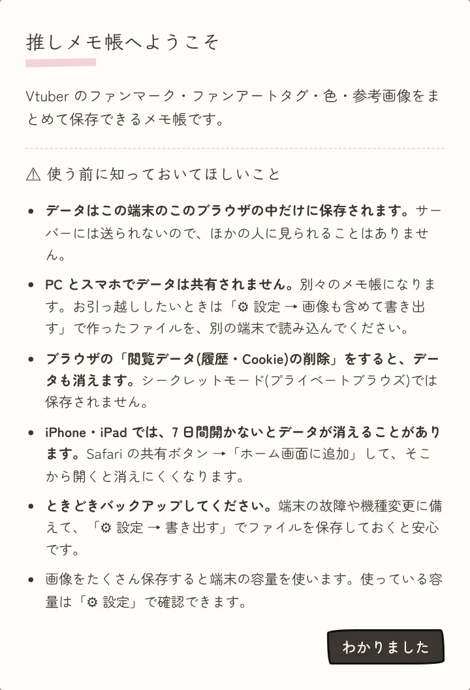
はじめにやること
スマホはホーム画面に追加しておくと、データが消えにくくなり、アプリのように開けます。
- スマホの人は、ホーム画面に追加する
- iPhone・iPad（Safari）：共有ボタン（□↑）→「ホーム画面に追加」
- Android（Chrome）：右上の ︙ →「ホーム画面に追加」または「アプリをインストール」
- 左上の ☰ →「＋ 推しを追加」で、推しを登録する（推しの登録・編集で詳しく説明）
画面の見かた
推しを選ぶと、その推しのページが開きます。番号は下の表と対応しています。
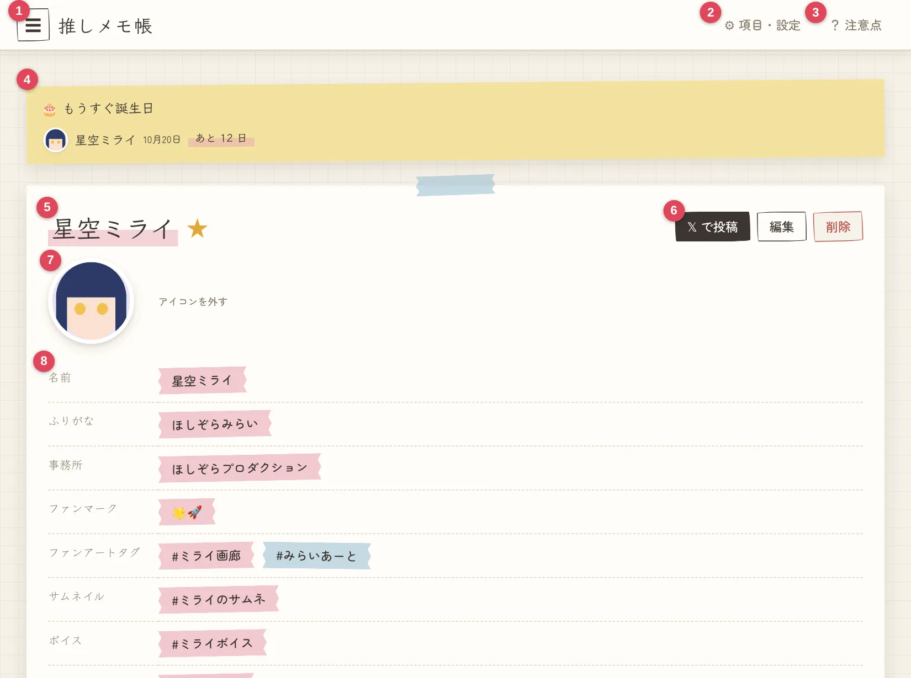
| 番号 | 名前 | できること |
|---|---|---|
| 1 | ☰ | 推しリストを開く（推しの選択・検索・追加） |
| 2 | ⚙ 項目・設定 | 登録項目の変更、投稿テンプレート、バックアップ（スマホでは「⚙ 設定」） |
| 3 | ？ | 注意点を見る・このマニュアルを開く |
| 4 | もうすぐ誕生日 | 誕生日が 1 か月以内の推しが出る（押すとその推しのページへ）。デビュー日などの記念日の当日は「🎉 今日は記念日」も出ます |
| 5 | 名前と ★ | ☆ を押すとお気に入り（★） |
| 6 | 𝕏 で投稿・編集・削除 | X に投稿、登録内容の変更、推しの削除 |
| 7 | アイコン | 押すとアイコン画像を登録・変更 |
| 8 | 登録内容 | マスキングテープ風のボタンを押すとコピー |
ページを下に進むと、色・誕生日・日付の項目（デビュー日など）・リンク、その下に参考画像があります。スマホでも並びは同じです。
推しの登録・編集
推しリスト
左上の ☰ を押すと、登録した推しの一覧が出ます。お気に入り（★）が一番上、そのあとはふりがなのあいうえお順です。
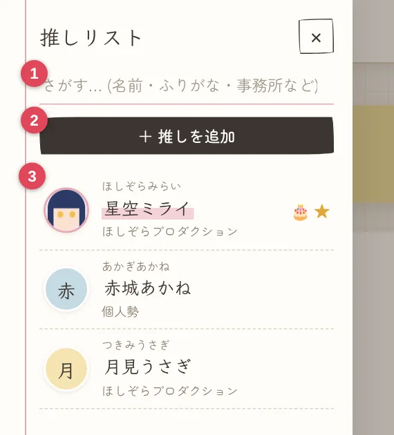
- 検索欄：名前・ふりがな・事務所などでさがせます（ひらがなでもカタカナでも OK）
- ＋ 推しを追加：新しい推しを登録します
- 推しの一覧：押すとその推しのページが開きます。右端の 🎉 は今日が記念日の推し、🎂 は誕生日が近い推し、★ はお気に入りです
検索欄に「ミライ」と入れた例です。
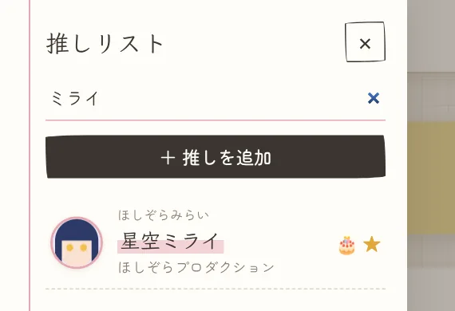
推しを追加する
「＋ 推しを追加」を押すと入力画面が開きます。入力して一番下の「保存」を押します。空欄のままの項目があっても大丈夫です。
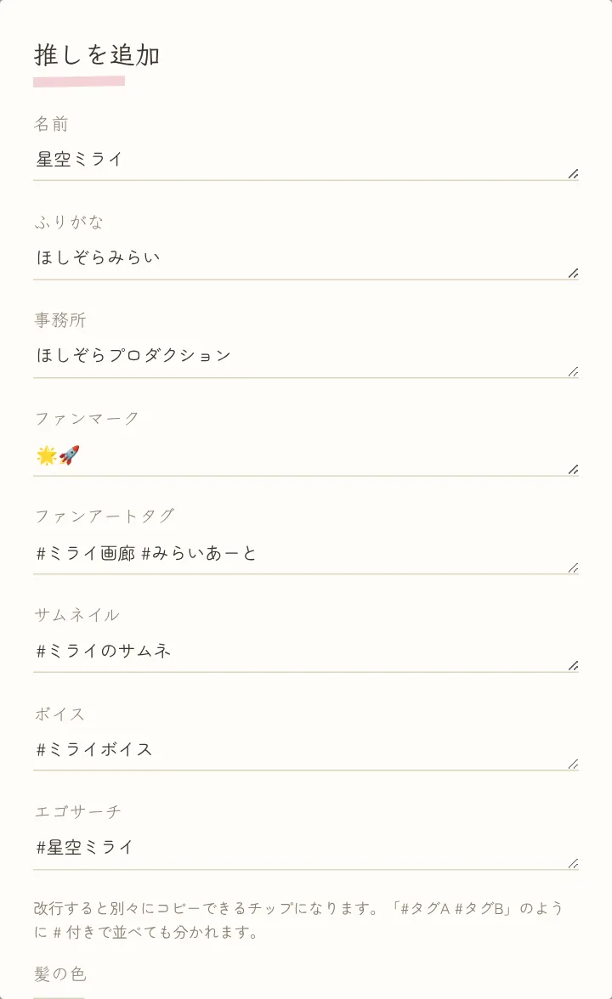
- 改行するか、
#タグA #タグBのように並べると、タグが 1 つずつ別のボタンになります - 下のほうに、色・誕生日・日付の項目（デビュー日など）・リンクの入力欄もあります（コピー・色・誕生日・記念日・リンク・X 投稿で説明）
- 漢字の名前の推しは、ふりがなを入れると推しリストで正しく並びます
編集・削除・アイコン・お気に入り
| やりたいこと | 操作 |
|---|---|
| 登録内容を直す | 推しのページの「編集」 |
| 推しを削除 | 「削除」（保存した画像もすべて消えます） |
| アイコンを付ける | 名前の下の丸い枠を押して画像を選ぶ（真ん中が正方形に切り抜かれます） |
| アイコンを外す | アイコンの横の「アイコンを外す」 |
| お気に入りにする | 名前の横の ☆ を押す（もう一度押すと外れます） |
| この推しだけ項目を隠す | 「編集」で、項目名の右の「非表示」を押して保存（タグが無い推しなどに。もう一度押すと「表示する」に戻ります） |
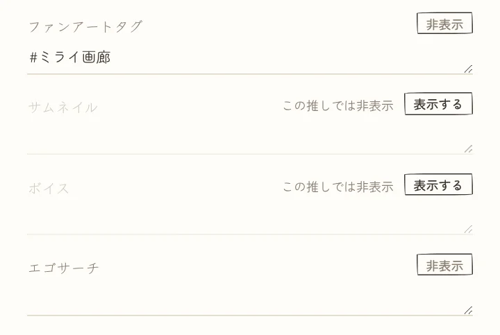
非表示にした項目は、その推しのページに出なくなり、投稿テンプレートにも入りません。入力した内容は消えないので、「表示する」を押せば元に戻ります。
コピー・色・誕生日・記念日・リンク・X 投稿
コピー
登録した内容は、マスキングテープ風のボタンを押すだけでコピーされます。押したボタンには ✓ が付きます（下の「#ミライ画廊 ✓」）。
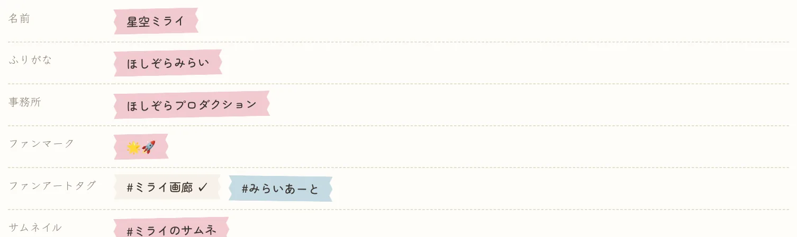
色（髪の色・目の色など）
「編集」→ 色の項目の「＋ 色を追加」で登録します。カラーピッカーで選ぶか、#2b3a67 のようなカラーコードを入力します。1 つの項目に何色でも登録できます。
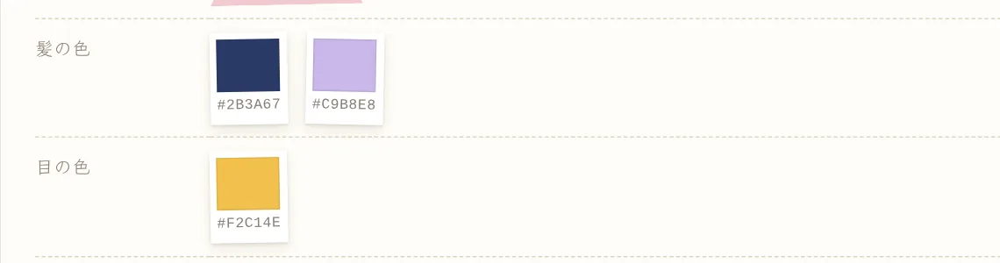
色見本を押すと、カラーコードがコピーされます。お絵描きソフトの色の設定に貼り付けられます。参考画像からスポイトで拾うこともできます（参考画像で説明）。
誕生日
「編集」→ 誕生日の月と日を選びます。年は入れても入れなくても大丈夫です。誕生日の 1 か月前から、画面の上にお知らせが出て「あと ○ 日」と数えてくれます。当日は「🎉 今日！」と出ます。
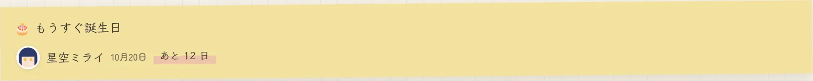
デビュー日などの記念日（日付の項目）
「編集」→ デビュー日などの年・月・日を入れます。年は入れなくても登録できます。日付の項目は「⚙ 項目・設定」の「日付の項目」で、推し始めた日・初配信なども自由に追加できます。
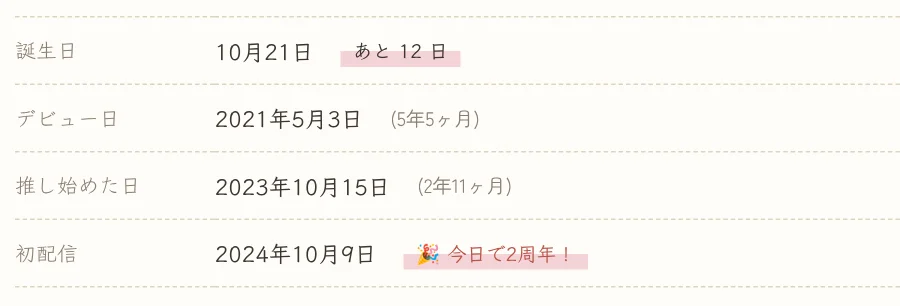
- 年を入れると、その日からの経過が「(5年5ヶ月)」のように出ます
- 記念日の当日は「🎉 今日で2周年！」と出て、画面の上のお知らせにも「🎉 今日は記念日」が出ます
- 年を入れていないときは日付だけが出て、当日は「🎉 今日！」と出ます
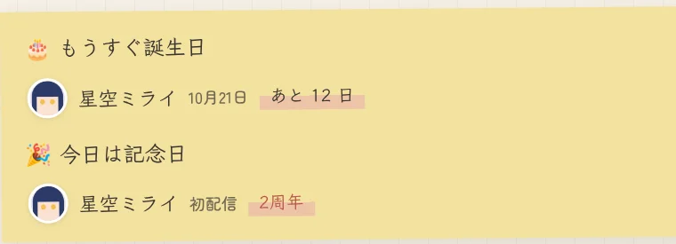
リンク
「編集」→「＋ リンクを追加」で、YouTube や X などの URL をいくつでも登録できます。名前を空にすると「YouTube」「X」などが自動で付きます。推しのページで押すと、そのページが開きます。
X に投稿
推しのページの「𝕏 で投稿」を押すと、ファンアートタグが入った X の投稿画面が開きます。文章は「⚙ 項目・設定」の投稿テンプレートで変えられます。
- 画像は、X の投稿画面で自分で選んでください
- 「「ファンアートタグ」が未登録です」と出たら、その推しのファンアートタグを登録してください
参考画像
参考画像は、推しごと・フォルダごと（例：通常衣装）に元の画質のまま保存できます。推しを追加すると「通常衣装」フォルダが自動でできます。
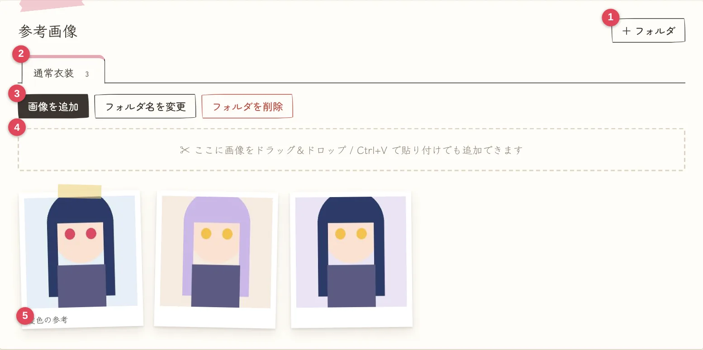
| 番号 | 名前 | できること |
|---|---|---|
| 1 | ＋ フォルダ | フォルダを作る（例：新衣装、ラフ資料） |
| 2 | フォルダのタブ | 押すとフォルダを切り替え。数字は画像の枚数 |
| 3 | 画像を追加 | 画像を選んで保存（複数枚まとめて OK）。横のボタンでフォルダ名の変更・削除（削除すると中の画像も消えます） |
| 4 | 画像を置く場所 | PC は画像をドラッグ＆ドロップ、または Ctrl + V で貼り付けても追加できます |
| 5 | ひとことメモ | 画像の下に表示（書き方は下の拡大表示で） |
画像の右下の ✕ で、その画像を削除できます。
拡大表示でできること
画像を押すと拡大表示になり、下のボタンでお絵描き用の確認ができます。
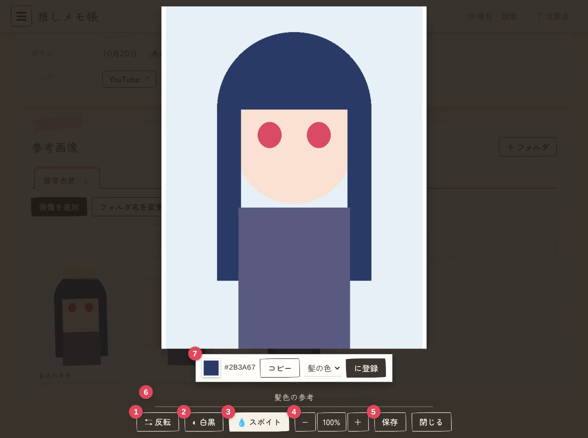
| 番号 | ボタン | できること |
|---|---|---|
| 1 | ⇆ 反転 | 左右反転（デッサンの狂いの確認に） |
| 2 | ◐ 白黒 | 白黒表示（色の明るさの確認に） |
| 3 | 💧 スポイト | 押してから、画像の色を拾いたい場所を押す |
| 4 | − / 100% / ＋ | ズーム。マウスホイールや指 2 本でもでき、ズーム中はドラッグで移動。「100%」で等倍に戻る |
| 5 | 保存 | 画像を端末にダウンロード |
| 6 | ひとことメモ | 書いて Enter（または閉じる）で保存。例：前髪の分け目 |
| 7 | スポイトで拾った色 | 「コピー」でカラーコードをコピー。色の項目（例：髪の色）を選んで「に登録」で推しの色に追加 |
反転と白黒を両方 ON にした例です。画像の外側を押すか、「閉じる」で拡大表示が閉じます。
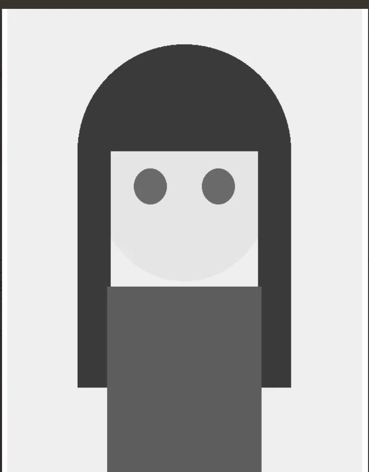
項目・設定
右上の「⚙ 項目・設定」（スマホでは「⚙ 設定」）で、登録する項目や投稿の文章を自由に変えられます。変えたら一番下の「保存」を押します。
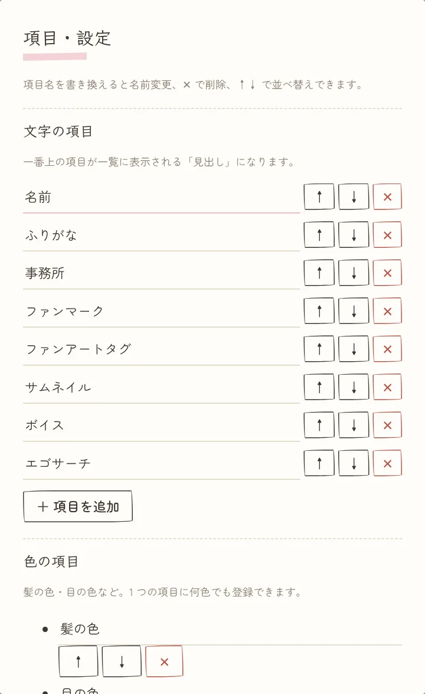
- 文字の項目：「＋ 項目を追加」で追加、項目名を書き換えて名前の変更、✕ で削除、↑↓ で並べ替え。一番上の項目が推しリストの「見出し」になります
- 日付の項目：デビュー日・推し始めた日など。文字の項目と同じように追加・変更・削除できます
- 色の項目：髪の色・目の色など。文字の項目と同じように追加・変更・削除できます（例：インナーカラー）
- 項目を削除しても、登録してあった内容は消えません。文字の項目は 1 つ以上必要なので、全部は消せません
下に進むと、投稿テンプレート・バックアップ・保存についてがあります。
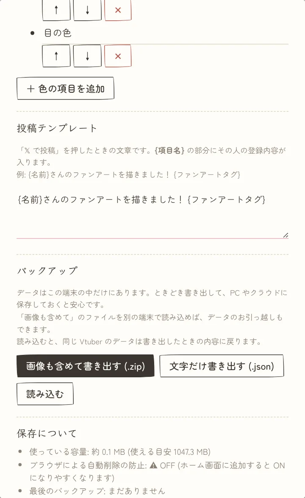
- 投稿テンプレート：「𝕏 で投稿」の文章です。
{項目名}の部分にその推しの登録内容が入ります。例：{名前}さんのファンアートを描きました！ {ファンアートタグ} - バックアップ：書き出しと読み込み（次の章で説明）
- 保存について：使っている容量、ブラウザによる自動削除の防止が ON か、最後にバックアップした日
バックアップとお引っ越し
データは端末の中だけにあるので、ときどきファイルに書き出しておくと安心です。最後のバックアップから 30 日たつと、画面の上にお知らせが出ます。
| ボタン | 中身 | ファイル名の例 |
|---|---|---|
| 画像も含めて書き出す | すべて（参考画像も）。別の端末へのお引っ越しに使える | oshimemo-2026-10-08-full.zip |
| 文字だけ書き出す | 文字・色・リンク・誕生日・日付・アイコン・設定（参考画像はなし、軽い） | oshimemo-2026-10-08.json |
どちらのボタンも、「⚙ 項目・設定」の下のほうの「バックアップ」にあります（前の章の 2 枚目の画像）。
読み込み方
- 「⚙ 設定」→「バックアップ」の「読み込む」を押す
- 書き出したファイル（.zip または .json）を選ぶ
- PC：「ダウンロード」フォルダ
- iPhone・iPad：「ブラウズ」→「ダウンロード」
- Android：「ファイル」→「ダウンロード」
- 「○人分・画像○枚のデータを読み込みますか？」で「OK」を押す
- 「読み込みました」と出たら完了
今あるデータは消えず、読み込んだデータが追加されます。同じ推しのデータがあるときは、バックアップの内容で上書きされます。
別の端末へお引っ越し
- 元の端末で「画像も含めて書き出す」
- できた zip を新しい端末に移す（自分宛てメール、Google ドライブ、iCloud Drive、USB など）
- 新しい端末でアプリを開いて読み込む
注意点とよくある質問
注意点
- データはこの端末のこのブラウザの中だけに保存されます。作者を含め、ほかの人には見られません。
- PC とスマホでデータは共有されません。移すときは「お引っ越し」の手順を使います。
- ブラウザの「閲覧データの削除」をすると、データも消えます。シークレットモードでは、閉じると消えます。
- iPhone・iPad は、7 日間開かないとデータが消えることがあります。ホーム画面に追加して、そこから開いてください。
- 画像をたくさん保存すると、端末の容量を使います。容量は「⚙ 設定」→「保存について」で確認できます。
⚠ 免責事項：このアプリの不具合・端末の故障・ブラウザのデータ削除などでデータが失われても、作者は一切の責任を負いません。大事なデータは、ご自身でバックアップしてください。
🖼 保存する画像について：このアプリに保存した画像の著作権は、それぞれの権利者（公式・イラストレーター様など）にあります。保存した画像は、ご自身でイラストを描くときの参考など、個人で楽しむ範囲でお使いください。画像の転載・再配布や、各公式のガイドラインに反する使い方はしないでください。保存した画像の使い方について、作者は責任を負いません。
🔒 データと通信について：登録した内容や画像は、お使いの端末の中だけに保存され、作者を含め外部に送られることはありません。アクセス解析なども使っていません。ただし、アプリの表示（GitHub Pages）と文字のフォントの読み込み（Google Fonts）のときに、IP アドレスなどの一般的な通信の情報が各サービスに送られます。また「𝕏 で投稿」を押すと、投稿する文章が X の投稿画面に渡されます。
📢 アプリの変更・公開終了について：このアプリの内容は、予告なく変更したり、公開を終了したりすることがあります。公開が終了するとアプリを開けなくなるので、大事なデータは定期的にバックアップしておいてください。
よくある質問
- Q. データが消えた。作者に戻してもらえる？
- A. 戻せません。データは作者のところに届いていないためです。バックアップがあれば、それを読み込んでください。
- Q. アプリを更新したらデータは消える？
- A. 消えません。新しい機能は、開き直すと数分〜10 分くらいで反映されます。
- Q. 「このブラウザで開けない形式」と出て画像を保存できない。
- A. その画像を JPEG や PNG に変えてから追加してください。他の画像はそのまま保存されています。
- Q. 「𝕏 で投稿」で画像も一緒に付けられる？
- A. 付けられません。X の仕組み上、画像は投稿画面で自分で選んでください。
- Q. 推しリストがあいうえお順にならない。
- A. 「ふりがな」を入れてください。漢字の名前は、ふりがながないと正しく並びません。